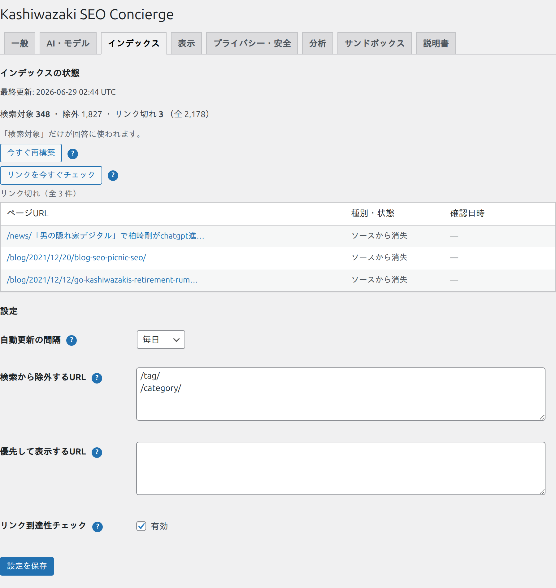
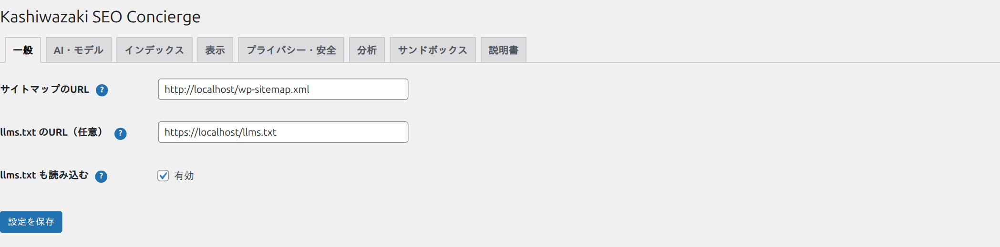

インデックス（索引）
「インデックス」タブでは、AIが検索の材料にする「索引」を作ります。索引はサイトのページをAIが読み込んで作るデータで、これがないとチャットは何も案内できません。

索引の材料：サイトマップと llms.txt
| 材料 | 説明 |
|---|---|
| サイトマップ | サイト内ページの一覧（通常 /wp-sitemap.xml）。ここに載っているページが索引の対象になります。 |
| llms.txt（任意） | AI向けにサイトの要点をまとめたテキスト。あれば索引の補助に使われます。無くても動作します。 |
サイトマップのURLが分からない場合は、ブラウザで https://あなたのサイト/wp-sitemap.xml を開いてみてください。XMLが表示されればそれが使えます。表示されない場合は、SEOプラグインのサイトマップURL（例: /sitemap.xml）を指定します。
サイトマップ／llms.txt のURLは「一般」タブで設定します。

索引を作る・作り直す（再構築）
ページを追加・更新したら索引を作り直すと、最新の内容が案内に反映されます。再構築には2つの方法があります。
手動で再構築
「今すぐ再構築」ボタンを押すと、その場で索引を作り直します。設定直後や、まとめて記事を更新した直後に使います。
自動（定期）再構築
WordPressの定期処理（cron）で、決めた間隔で自動的に再構築します。更新が多いサイトは自動にしておくと手間がかかりません。
使い分けの目安：記事をたまに書くサイトは「手動」で十分。頻繁に更新するサイトは「自動」にしておくと、案内が常に最新に保たれます。なお、再構築のたびに検索AI（埋め込み）の費用が少しかかります（コストの考え方）。
WordPressのcronはサイトへのアクセスをきっかけに動きます。アクセスが極端に少ないサイトでは定期再構築が遅れることがあります。確実に最新化したいときは「今すぐ再構築」を使ってください。
不要なページを除外する（除外ルール）
タグ一覧やカテゴリー一覧など、案内先として不要なページは「除外ルール」で索引から外せます。パスの一部分を1行に1つ書くと、それを含むURLが除外されます。
| 入力例 | 意味 |
|---|---|
/tag/ | URLに /tag/ を含むページ（タグ一覧）を除外 |
/category/ | URLに /category/ を含むページ（カテゴリー一覧）を除外 |
/author/ | URLに /author/ を含むページ（著者アーカイブ）を除外 |
除外ルールはハードコードではなく、いつでも変更・解除できます。ルールを消して再構築すれば、また案内対象に戻ります。除外しても、すでに作った検索用データは保持されるため、解除しても再びすぐ検索対象になります。
リンク到達性チェック（壊れたリンクを案内しない）
索引したページが実際に開けるかを定期的に確認し、見つからない（404）・エラー（403・500・タイムアウト等）のページを回答候補から自動で外します。ページが復旧すれば、自動で案内対象に戻ります。一時的なサーバーの不調で正常なページを誤って外さないよう、404・410 は即時、その他のエラーは2回続けて失敗したときに外す設計です。
「インデックス」タブ上部の状態に、検索対象・除外・リンク切れの件数と、リンク切れページの一覧（URL・種別／状態・確認日時）が表示されます。「リンクを今すぐチェック」ボタンを押すと、その場で全ページの到達性を確認できます（件数が多い場合は分割して進むため、完了まで数分かかることがあります）。
この機能は「設定」のリンク到達性チェックでオン／オフできます（通常はオンのままで構いません）。Cloudflare 等のWAFがボットにだけ 403 を返す環境もあるため、403 などは即時ではなく2回連続失敗で除外します。
うまく索引できないときは
- サイトマップURLが正しいか（ブラウザで開けるか）を確認
- 検索AI（埋め込み）のAPIキーが「AI・モデル」タブで設定済みか
- 「プライバシー・安全」のコスト上限に達していないか
- 除外ルールで対象を外しすぎていないか
さらに詳しくはトラブル・FAQを参照してください。